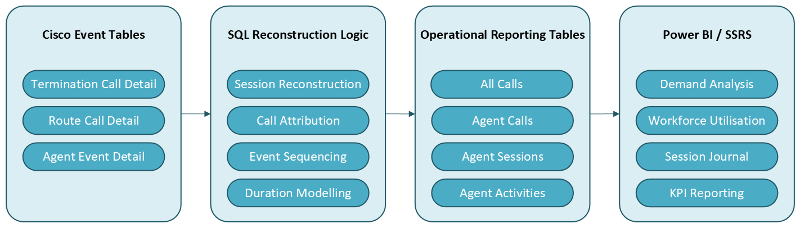

Operational Context
The organisation operated a high-volume emergency services clinical contact centre handling emergency calls, clinical support activity, internal operational calls and outbound clinical assessment activity across multiple operational teams.
All telephony reporting relied heavily on a third-party reporting dataset built from Cisco telephony data. Following a switchboard software change, the existing reporting tables became increasingly unreliable. Existing reporting also lacked sufficient detail to accurately represent operational call handling, agent activity and session-level behaviour.
A new reporting environment was required to:
- replace the deprecated third-party reporting structures
- provide transparent and internally maintainable reporting logic
- improve operational confidence in telephony KPIs
- support detailed operational analysis at call, session and agent level
- enable future reporting development without reliance on external reporting vendors
The project evolved beyond replacement reporting and became a reconstruction of operational call and agent behaviour directly from native Cisco event data.
Business Problem
The primary challenge was not visualising call volumes or agent metrics but reconstructing operational workflows from low-level telephony event streams.
Cisco telephony tables recorded individual call segments rather than complete calls, low-level routing and termination events rather than operational workflows, fragmented agent activity states, overlapping call activity and queue and routing behaviour spread across multiple related datasets.
The reporting environment therefore required reconstruction of:
- complete operational calls
- agent login sessions
- activity timelines
- call attribution
- queue behaviour
- handling durations
- workforce utilisation
- operational timelines
Additional complexity existed where:
- internal calls could reverse source and destination attribution depending on answer state
- conference and transferred calls created overlapping call segments
- some agent sessions contained no explicit logout event
- call ownership changed depending on routing and termination behaviour
- daylight saving adjustments introduced temporal inconsistencies
- Cisco interval tables summarised activity differently to call-level datasets
Without reconstruction and validation of these workflows, operational reporting would produce inaccurate call durations, attribution and workforce metrics. Cisco datasets recorded low-level events and call segments rather than complete operational workflows. Reporting structures required reconstruction of operational sessions, activity timelines, queue behaviour, and call attribution from multiple related event streams.
Technical Environment
The source systems were Cisco tables landed into the data warehouse; Route Call Detail (RCD), Termination Call Detail (TCD), Agent Event Detail (AED), interval reporting tables which mimicked what was available in Cisco internal reports and existing static lookup and enrichment tables.
The technologies used were SQL Server, T-SQL stored procedures, Power BI, SQL Server Reporting Services (SSRS) and daily ETL processing.
The reporting environment processed datasets approaching two million records across multiple operational reporting tables.
Data Flow

Investigation and Workflow Interpretation
A significant proportion of the work involved interpreting Cisco telephony behaviour and determining how operational workflows were represented within the underlying event data.
This required heavy analysis of Cisco technical table documentation and in some cases investigation through online technical forums dedicated to Cisco interpretation where the functionality was not clear. The majority of this work focused on interpreting how actions within the call were represented in the core Termination Call Details table, especially the combination of two pivotal fields, Peripheral Call Type (PCT) and Call Disposition Flag (CDF). This helped identify relevant and irrelevant call segments.
Call event level data was compared extensively against interval reporting outputs, real-world call scenarios, Cisco's internal CUIC reporting and reconstruction of call flows from multiple related event streams. The work extended beyond straightforward call reporting and became a detailed reconstruction of operational telephony behaviour.
Some call aspects received specific investigation such as:
- Agent attribution for internal calls between source and destination agents
- Internal calls which were not answered
- Conference and transferred calls which overlapped
- Agent sessions where logout events were missing
- Sequencing of activity states which crossed interval boundaries
- Time sequence of calls and agent activities from separate tables
- Queue behaviour and status from routing events
- Clear identification of valid talk, ring, hold and queue segments
- Local user defined fields created by network engineers
Operational activity could not be derived from a single row or timestamp. Instead, operational state was reconstructed dynamically through event sequencing, temporal modelling and workflow interpretation across multiple datasets.
Validation
Validation formed a substantial component of the work due to the complexity and ambiguity of the underlying telephony datasets. Validation methods included:
- comparison against Cisco interval tables
- comparison against Cisco reporting outputs
- custom SQL comparison scripts
- operational walkthroughs and test scenarios
- review of individual call and session histories
- cross-validation of durations and attribution from differing perspectives
- investigation of anomalous routing and termination behaviour
During validation, several inaccuracies were identified within existing third-party reporting outputs, not present in the reconstructed reporting environment.
During the validation process particular attention was given to call attribution consistency, overlapping call durations, session completeness, unanswered call behaviour, missing logout events, activity sequencing, timestamp accuracy and the handling of transferred and conference calls.
SQL Transformation
SQL Server stored procedures transformed native Cisco event tables into more user-friendly operational reporting tables designed for Power BI and SSRS reporting. Transformation outputs consisted of:
- call-level table (one row per call)
- agent calls (one row per call per agent)
- agent session (one row per session) and
- agent activity (one row per activity per agent)
Transformation logic to create these tables included several techniques:
- Reconstructing sessions from Agent Event Detail
- Sequencing events across multiple telephony tables
- Temporal modelling to associate calls and activities to correct sessions
- Call attribution logic where multiple agents were involved
- Overlapping duration handling for conference and consultation activity
- Activity classification through lookup enrichment
- Duration derivation and timestamp correction
- Daylight saving time correction logic
- UNION-based schema normalisation
- Conditional aggregation using CASE logic
- Staged temporary-table processing for performance optimisation
The resulting reporting structures transformed low-level Cisco event streams into operationally meaningful entities including:
- complete calls
- agent sessions
- agent activities
- operational timelines
- queue and handling metrics
- workforce utilisation summaries
A further session journal view combined call and activity events into a complete chronological operational timeline for each agent session.
Power BI Design
The transformed reporting tables were modelled directly in Power BI and SSRS. Multiple operational reports were developed to support workforce management, operational review and service performance reporting.
Reporting outputs included:
- telephony demand analysis
- answer and abandonment reporting
- handling time analysis
- operational queue reporting
- workforce utilisation metrics
- session-level activity reporting
- detailed operational timelines
- agent performance and activity dashboards
DAX measures supported:
- operational KPI calculations
- duration and average calculations
- percentage and percentile reporting
- filter-context management
- operational time formatting
- broader summary and comparative reporting
An operational agent dashboard provided:
- busy, idle and away metrics
- call handling activity
- session summaries
- drill-through to call-level detail
- operational timeline analysis
Report layouts prioritised clarity and readability with visibility of key metrics along with access to detailed drill-through analysis, filters, definitions and calculation explanations and instructions for use to ensure clarity for the end user on what was being reported.
Outcome
The completed reporting environment replaced the deprecated third-party reporting structures and became the primary source for operational telephony reporting. The reconstructed reporting tables provided:
- improved confidence in telephony KPIs
- detailed operational visibility of call demand and workforce utilisation
- session-level operational analysis
- improved queue and handling reporting
- accurate attribution of calls and activities
- reusable reporting structures for future reporting development
Operational managers gained visibility of:
- demand patterns
- abandonment behaviour
- answer performance
- workforce utilisation
- session-level operational activity
- detailed agent timelines
Individual agent activity reports replaced externally generated reporting outputs, avoiding approximately £60k in additional third-party reporting expansion costs.
Personal Contribution
Responsible for the end-to-end investigation, SQL development, operational modelling, validation and reporting implementation including:
- Reverse engineering Cisco telephony event behaviour
- Designing operational session and call reconstruction logic
- Developing SQL Server transformation procedures and reporting tables
- Implementing temporal modelling and event sequencing logic
- Resolving call attribution and overlapping duration challenges
- Validating KPI logic against operational and Cisco reporting outputs
- Designing operational Power BI and SSRS reporting
- Investigating workflow anomalies and telephony edge cases
- Optimising reporting performance across large operational datasets
- Establishing reusable operational reporting structures for future reporting development